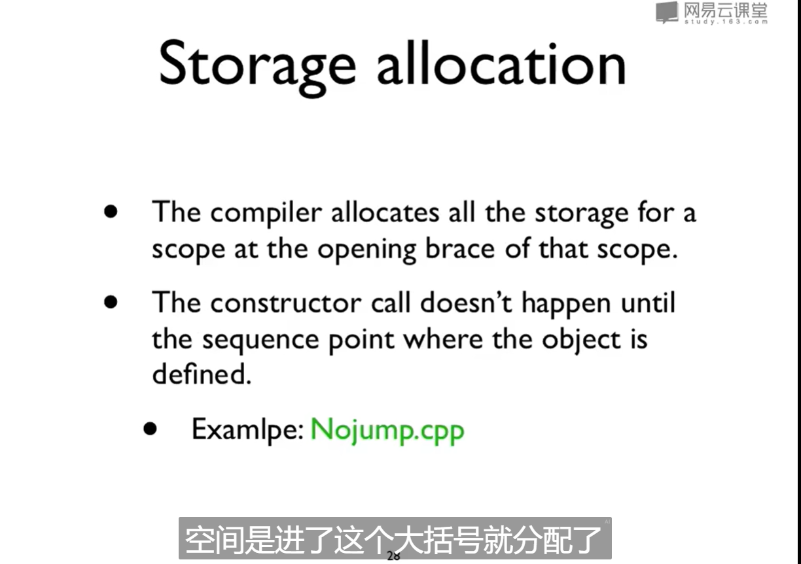
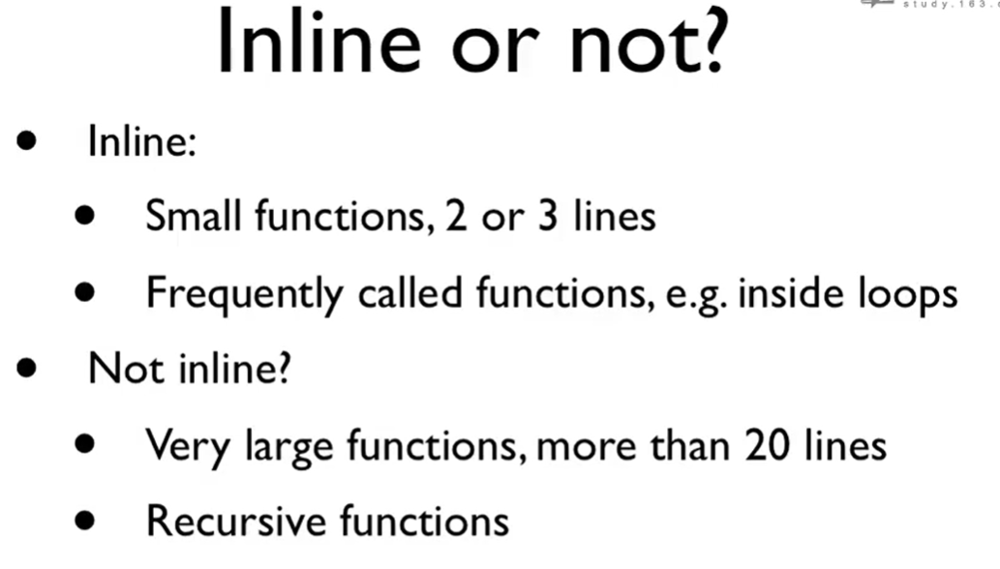
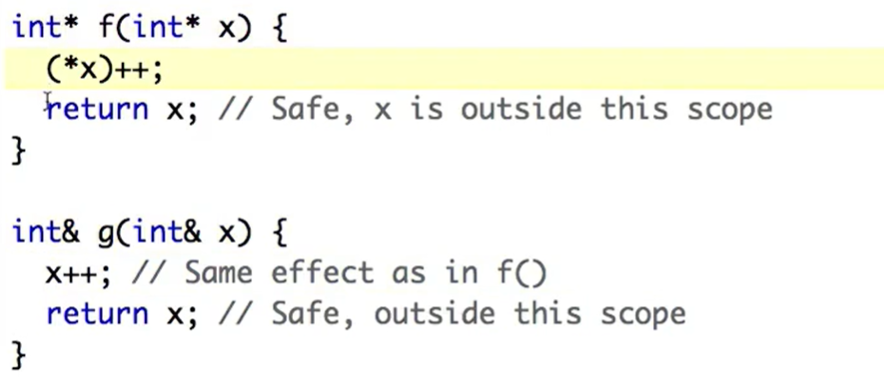
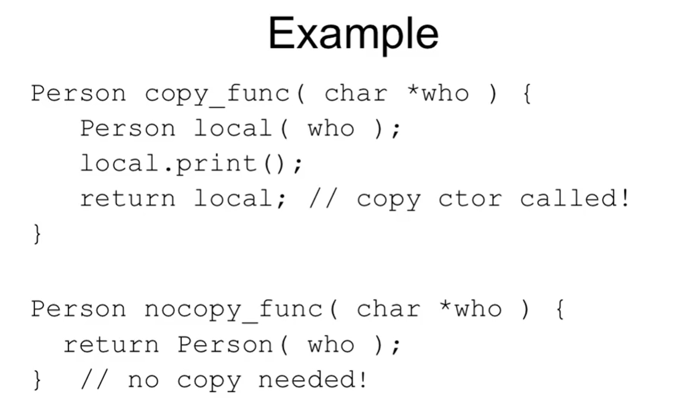

随便记点。
沟槽的指针。。。
somequestions
Q1:c++不需要通过new分配空间，在A a;的瞬间就会去调用构造器的意思？
A: yes,这里就会调用默认构造器进行初始化。一旦出现类名 名字就会进行初始化click
Q2:c++的空间
A: 堆、堆栈、全局数据区。
- 堆：new出来的东西
- 堆栈：本地变量
- 全局数据区：全局变量。静态本地变量、静态成员变量
include与声明
在.h中声明 在.cpp中定义
在所有.h头文件中必须要有macro条件编译，否则会声明；多次，有点像单例模式
.h文件与.cpp实际没有联系，没有include直接在最前面写声明在编译时没有问题
include的可以是任何文件形式，比如txt，like<iostream> 相当于插入文本在最前面
构造函数
c++中不会默认初始化成员变量（java会
主要是为了效率考虑。1
2
3
4
5int main(){
//c++的初始化长这样
Tree t(12);
Tree t2 = 12;//same
}
初始化列表
1 | class Point{ |
这两个函数的初始化早于构造函数被执行
推荐使用这个？
构析函数
~类名(){}
在对象被回收的时候执行
java中没有明确的构析函数，因为有垃圾回收机制。
C#是有构析函数的。

即使使用goto或别的方法跳过了初始化构造，空间依然会被分配
所以如果构造了析构函数依然会被执行，编译会不通过因为构造被跳过了。
example:
1 | void f(int i){ |
访问限制
同一个类的不同对象可以访问private成员
java也可以。
firend
声明friend的struct/函数可以访问私有成员
class vs. struct
class defaults to private
struct defaults to public
只有这一点点区别！首选class.只有在类及其简单时使用struct
1 | struct A{ |
继承
有个什么fully inclusion和reference，说java只有后面这种，我没懂
如果B继承了A，必须保证能做A的构造
name-hiding
如果B有父类A同名的函数，A中所有这个函数的重载都会被隐去
并且此同名函数与A中的函数没有关系，并非override
oop中只有c++这么干（哎呦我草这个c plus plus怎么这么坏啊
默认参数
Stash(int size,int initQuantity = 0);Stash(int initQuantity = 0 , int size); <-illegal
default argument是编译时刻的问题，非运行时刻的问题
有默认参数并非重载函数，仍然是一个函数
default value只能写在.h中，不能写在.cpp中
建议不要使用default value 不易读不安全
内联函数
Overhead额外开销
inline内联
因为运行时只能同时查看一个文件，
所以inline函数的一整个body只能放在.h文件中、
.cpp不写东西
因为inline函数的definition就是declaration
具体请看vcr
牺牲代码的空间以减少开销 比宏强
inline may not in-line
如果成员函数直接把body写在后面，则默认为inline

Const
在函数后面加const可以构成重载关系
const成员变量需要在一开始被初始化
const类的成员变量需要再一开始被初始化
引用
- char c; //a character
- char* p = &c; //a pointer to a character
- char& r = c; //a reference to a character
alias
const int& z = x 通过z不能修改x 和const指针一样

比指针清爽许多
f(&a) //Ugly(but explicit)
g(a) //Clean(but hidden)
引用不能overloaded 因为在调用的时候形式是一样的
reference就是通过指针实现的，发明的目的就是为了使代码少一点**
java通过另一种方式实现
java所有对象都放在堆里 只有一种方式去访问对象（c++有三种），即指针
（所以说了半天的引用类其实就是指针，和c++里的引用不同，引用是不能做引用之间的赋值的
polymorphism
virtual
虚函数的存在是为了多态。
Java 中其实没有虚函数的概念，它的普通函数就相当于 C++ 的虚函数，动态绑定是Java的默认行为。如果 Java 中不希望某个函数具有虚函数特性，可以加上 final 关键字变成非虚函数。
只有c++是默认静态绑定的（太变态了
有virtual函数的类有一个指向vtable的指针vptr，以此找到对应的函数
子类必须override所有父类里virtual的函数，否则会name-hiding
不能返回本身因为只能通过引用或者指针拿到？
哎呀我草c++怎么这么恶心
拷贝构造
1 | howmany(const howmany& o); |
无参 有参 拷贝构造
默认拷贝构造如果成员有其他对象，会让那个类的拷贝构造来构造，递归下去
member to member copy not byte to byte copy
如果是howmany(howmany o);意味着传进去的参数要先进行一次拷贝构造，于是无限递归（会报错！
而reference不会创建新对象
此前在做java题的时候用的ans.add(new ArrayList<>(level))似乎就是拷贝，深拷贝
http
隐形的拷贝就是传参进函数的时候
java都是指针所以没有问题的样子

string是标准库里的东西，在默认拷贝的时候不会使两个成员指向同一个地方，导致最后被析构两次，它会被copied wisely。而char*会有这个问题。
因此建议使用string，忘记一切（
建议：写了一个类默认写三个函数：
- default constructor
- virtual destructor （why virtual
- copyctor
如果不需要拷贝构造，设置为private。
static
除了静态方法和静态成员
static本地变量的方法仍然存在，本质就是成为一个全局变量，只能在这个.c文件里使用
static全局变量过时了
static对象在main之前被初始化，不同文件的初始化顺序是不同的
（java没这个问题因为java根本没有全局变量）
静态成员
静态成员一定要在.cpp里有一个definition ,likeint A::i;
因为在class里只有declaration，而static又导致它放在全局变量的地方，link的时候找不到
运算符重载
分为全局的和函数的
原型、类型转换（看累了
模版
java里的泛型1
2
3
4
5
6template < class T >
void swap(T& x,T& y){
T temp = x;
x =y;
y =temp;
}
异常
1 | try{ |
流
STL
Standard Template Library